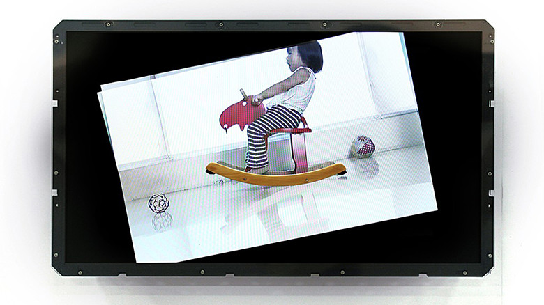

idea

ユェン・グァンミン
http://www.ntticc.or.jp/ja/archive/works/smiling-rocking-horse/-どんな人
台湾のアーティストです。様々な手法や技法をつかった映像作品を制作しています。
-解説
木馬にのった女の子が映った映像が流れている、いたって普通の映像に見えますが、続けて見ていくと、木馬は水平を保ったままゆれずに、画面が大きく傾きながらゆれ始めます。通常、木馬が揺れるのが普通ですが、そこであえて木馬の周りを揺らすことで、意外性のある映像作品を表現しています。
-好きなところ
揺れるはずのものが揺れず、周りの別のものが揺れ始めるという意外性が好きです。 似たような作品にこんなものがあります。 ・A Short History of the Wheel http://vimeo.com/17593720 普通回るはずの車輪が回らず、周りの風景が回っていく映像作品です。 普通動くものが動かず、他のものがその影響をうけるという逆転の発想は、 他の表現でも活かせそうな気がしました。